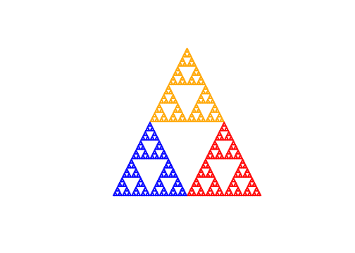
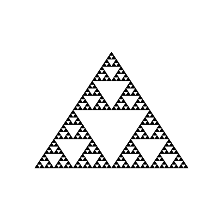
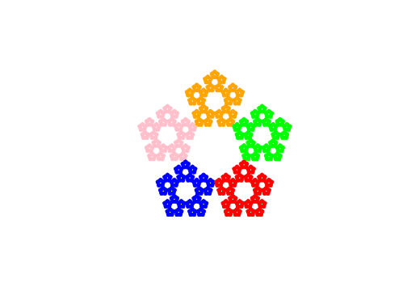
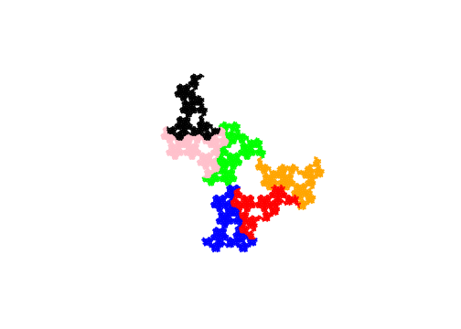

Rozdział 2 Misja druga
Misja, w której chcąc nie chcąc dowiadujemy się czym jest kontrakcja, a także poznajemy wiele innych matematycznych obiektów.
2.1 Stefan Banach
W 1892 roku, w Krakowie, urodził się jeden z najwybitniejszych matematyków XX wieku, genialny samouk, człowiek legenda, Stefan Banach. Matematyką interesował się już w gimnazjum, ale traktował ją raczej jako hobby. Seria przypadków zdecydowała o tym, że stał się czołowym reprezentantem Lwowskiej Szkoły Matematycznej.
W szkole średniej Banach zaprzyjaźnił się z Witoldem Wilkoszem, późniejszym profesorem matematyki na Uniwersytecie Jagielońskim, z którym rozmawiał o rozmaitych matematycznych zagadkach. Później do tego grona dołączył Otto Nikodym i to właśnie jedna z rozmów o matematyce pomiędzy Banachem a Nikodymem doprowadziła do spotkania z Hugonem Steinhausem. Steinhaus dostrzegł olbrzymi talent matematyczny młodego Banacha, stworzył mu warunki do rozwoju, które szybko doprowadziły do rozwoju jednego z najbardziej twórczych, oryginalnych umysłów matematycznych.
W 1920 roku, dzięki staraniom Hugona Steinhausa, Banach otrzymał posadę asystenta na Politechnice Lwowskiej u Antoniego Łomnickiego. Talent matematyczny i ciężka praca szybko przyniosły owoce. Po dwóch latach w pracy doktorskiej Banach zawarł nowe, dziś podstawowe twierdzenia analizy funkcjonalnej, rodzącej się dyscypliny matematyki. Jednym z wyników było zdefiniowanie “przestrzeni B”, która dzisiaj jest nazywana przestrzenią Banacha.
O życiu Banacha krąży wiele anegdot. Jedna z nich dotyczy uzyskania stopnia doktora. Zgodnie z anegdotą, Banach na tyle nie dbał o formalne tytuły, że nie zamierzał starać się o doktorat. Jego przełożeni widząc talent matematyka i uważając, że stopień doktora jest potrzebny, uknuli intrygę. Rozprawę doktorską złożyli z luźnych notatek z twierdzeniami a na egzamin doktorski ściągnęli go podstępem, mówiąc, że z Warszawy przyjechała delegacja, która ma kilka ciekawych problemów matematycznych i trzeba im wytłumaczyć rozwiązania. W rzeczywistości Banach skończył normalne studia doktorskie, ale jego lekceważący stosunek do tytułów był świetną pożywką dla tego typu anegdot.
Tak błyskotliwy umysł przyciągał inne błyskotliwe umysły. Jeszcze w 1919 Banach współtworzył Towarzystwo Matematyczne w Krakowie, które później przekształciło się w Polskie Towarzystwo Matematyczne. Już we Lwowie, razem ze Steinhausem założyli Lwowską Szkołę Matematyczną, która specjalizowała się w analizie funkcjonalnej. Była to kuźnia niesamowitych talentów, dość wymienić kilku jej przedstawicieli: współtwórca bomby termojądrowej i algorytmu Monte Carlo Stanisław Ulam, Władysław Orlicz badający przestrzenie funkcyjne, Mark Kac pracujący nad rachunkiem prawdopodobieństwa czy Stanisław Mazur rozwijający teorie przestrzeni liniowo-topologicznych.
Ulubionym miejscem pracy Stefana Banacha była Kawiarnia Szkocka, gdzie przy kawie, koniaku czy muzyce spotykał się z innymi matematykami by pracować nad fascynującymi ich problemami. Problemy te były początkowo spisywane na serwetkach lub stole, do czasu, gdy Łucja, żona Banacha, wyposażyła grupę w gruby zeszyt. Ten zeszyt to legendarna Księga Szkocka. Co trudniejsze problemy miały zapisy o nagrodzie za ich rozwiązanie. Nagrody były równie oryginalne jak i cała szkoła Lwowska. Dość powiedzieć, że jedną z nagród była żywa gęś. Do dziś nie wszystkie problemy z tej księgi znalazły rozwiązanie.
Nazwisko Banacha znajduje się w wielu matematycznych twierdzeniach czy innych niesamowitych wynikach. Jednym z nich jest paradoks Banacha-Tarskiego, twierdzenie mówiące, że można trójwymiarową kulę rozciąć na skończoną liczbę części, z których po odpowiednim obrocie i przesunięciu można złożyć dwie kule o takim samym rozmiarze. Niesamowicie pomysłowa konstrukcja, pozornie niemożliwa. Jak z obrotami dwukrotnie powiększyć objętość kuli? Okazuje się, że wystarczy by podzbiory były niemierzalne i już można robić z nimi matematyczne cuda.
Życie Banacha pełne jest niesamowitych zwrotów akcji. Przed drugą wojną światową był uznanym profesorem matematyki. Pewnego dnia przyjechał do Lwowa John von Neumann by sprowadzić Banacha do Stanów. Miał wręczyć Banachowi czek z wpisaną cyfrą 1, oraz oświadczyć, że ten może dopisać tyle zer ile uzna za stosowne. Na to Banach miał odpowiedzieć, że “to za mało by wyjechać z Polski”. Ale wojna pozbawiła go i wielu innych badaczy możliwości pracy zarobkowej. Część wojny spędził jako karmiciel wszy w Instytucie Badań nad Tyfusem u profesora Rudolfa Weigla. Nie jest to praca marzeń, ale pozwalała na uniknięcie części represji stosowanych przez okupantów.
Steinhaus powiedział kiedyś o Banachu, że “łączył w sobie iskrę geniuszu z jakimś zadziwiającym imperatywem wewnętrznym, który mu mówił bezustannie słowami poety ,,Jest tylko jedno: żarliwa gloria rzemiosła’’ - a matematycy wiedzą dobrze, że ich rzemiosło polega na tej samej tajemnicy, co rzemiosło poetów…”.
2.2 Fraktal, czyli punkt stały

Beta i Bit spotykają Stefana Banacha w Kawiarni Szkockiej we Lwowie
Stefan Banach w marudzeniu znudzonego Bita odnajduje ciekawe twierdzenie
Gwoździem programu w tym rozdziale będzie twierdzenie Banacha o punkcie stałem i związek tego twierdzenia z fraktalami. Zaczniemy od pokazania konstrukcji kilku nowych ciekawych fraktali takich jak Smok Heighwaya czyi Paproć Barnsleya. Zaspokoiwszy pierwszą ciekawość związaną ze sposobem konstrukcji fraktali zagłębimy się w podstawy matematyczne tych figur Dla osób, które studiowały matematykę, może być to przypomnienie pewnych pojęć kluczowych w analizie matematycznej czy topologii. Dla osób, które matematyki nie studiowały, może być to interesujące spojrzenie na to jak matematycy formułują tezy.
2.2.1 Smoki i paprocie
Pierwszy rozdział zostawił nas z metodą konstrukcji trzech rodzajów fraktali. Każdy z nich można było wykonać przez powtarzanie w kółko kroków:
Algorytm na proste fraktale
- weź jakąś figurę,
- skopjuj ją \(x\)-razy,
- pomniejsz ją \(y\) razy,
- pomniejszone kopie poprzesuwaj,
- idź do kroku 2.
W przypadku kurzu Kantora kopiowaliśmy \(x=2\) razy a pomniejszaliśmy \(y=3\) razy. Dla trójkąta Sierpińskiego kopiowaliśmy \(x=3\) razy a pomniejszaliśmy \(y=2\) razy. Dla Dywanu Sierpińskiego kopiowaliśmy \(x=8\) razy a pomniejszaliśmy \(y=3\) razy.
Okazuje się, że w bardzo podobny sposób można stworzyć więcej różnych fraktali. A jeżeli obok skalowania i przesuwania pozwolimy jeszcze na obroty, to otrzymamy bardzo bogatą klasę różnorodnych ciekawych figur. Złożenie skalowania, przesuwania i obrotu nazwiemy przekształceniem afinicznym, ale dopiero w drugiej czesci tego rozdziału.
Co więcej okazuje się, że figura wybrana w kroku 1 nie ma znaczenia! Jak później pokażemy, tym algorytmem dojdziemy do takiej samej figury bez względu na to czy na początku wykorzystamy rysunek trójkąta czy słonia czy małej kropki. Jak to możliwe! To będzie główny wniosek z twierdzenia Banacha o punkcie stałym.
2.2.1.1 Pięciokąt Sierpińskiego
Zacznijmy od Pięciokątu Sierpińskiego (z ang. Pentagon Sierpinskiego). Sztuczkę z trójkątem czy kwadratem możemy powtórzyć z każdym wielokątem foremnym, np. pięciokątem.
Jeżeli będziemy wyjściową figurę kopiować pięciokrotnie, następnie zmniejszać ją o 0.382 (a dokładniej o \(\frac{3-\sqrt 5}2\), patrz https://larryriddle.agnesscott.org/ifs/pentagon/details.htm), a następnie przesuwać w rogi pięciokąta, tak by zmniejszone figury stykały się krawędziamy, to po powtarzając tę procedurę wielokrotnie uzyskamy Pięciokąt Sierpińskiego. Dokłądnie taki jak na rysunku poniżej.
Pięciokąt Sierpińskiego. Figura jest pomniejszana i przesuwana w pięć rogów pięciokąta, każdą z pięciu replikacji oznaczono innym kolorem.
n-kąty Sierpinskiego. Tę samą sztuczkę można wykonać dla dowolnego n-kąta foremnego. Parametry skalowania i przesunięcia znaleźć można np. w Wikipedii https://en.wikipedia.org/wiki/N-flake
Ale prawdziwa magia zaczyna się gdy w tych transformacjach pozwolimy na obroty.
Algorytm konstrukcji złożonych fraktali
- weź jakąś figurę,
- skopjuj ją \(x\)-razy,
- pomniejsz ją \(y\) razy,
- pomniejszone kopie obróć i/lub przesuń,
- idź do kroku 2.
Zobaczmy jak ten algorytm działa na przykałdzie kilku ciekawych zestawów transformacji.
2.2.1.2 Drzewo Pitagorasa
Konstrukcja tego fraktala została opisana w 1942 roku przez Alberta Bosmana https://pl.wikipedia.org/wiki/Drzewo_pitagorejskie. Jest kilka różnych konstrukcji tej figury, poniżej przedstawimy konstrukcje opartą o dwie transformacje, które po złożeniu i odpowiednio długim powtarzaniu doprowadzą do drzewa.
- Transforamcja 1: obróć figurę o \(45^{\circ}\) w lewo a następnie przeskalują ją współczynnikiem \(\sqrt(1/2)\).
- Transforamcja 2: obróć figurę o \(45^{\circ}\) w prawo a następnie przeskalują ją współczynnikiem \(\sqrt(1/2)\).
Poniższy obrazek ilustruje drzewo i obie transformacje. Kod pozwalający na odtworzenie tego fraktala znajduje się na końcu rozdziału.

Drzewo Pitagorasa. Panel A przedstawia fraktal, panel B ilustruje dwie transformacje składające się na fraktal. Obraz jest zmniejszany sqrt(2) razy i obracany o 45 stopni, każdą z dwóch replikacji oznaczono innym kolorem.
2.2.1.3 Smok Heighwaya
Okazuje się, że bardzo wiele ciekawych figur można uzyskać dwoma transformacjami. Jedną z nich jest Smok Heighwaya którego konstrukcję pokazali po raz pierwszy John Heighway, Bruce Banks i William Harter z NASA. Oparta jest o takie dwie transformacje.
- Transformacja 1: obróć figurę o \(45^{\circ}\) w lewo a następnie przeskalują ją współczynnikiem \(\sqrt(1/2)\).
- Transformacja 2: obróć figurę o \(45^{\circ}\) w lewo a następnie przeskalują ją współczynnikiem \(\sqrt(1/2)\) i przesuń o 1 wzdłuż osi poziomej.
Poniższy obrazek ilustruje smoka i obie transformacje. Kod pozwalający na odtworzenie tego fraktala znajduje się na końcu rozdziału.

Smok Heighwaya. Panel A przedstawia fraktal, panel B ilustruje dwie transformacje składające się na fraktal. Obraz jest zmniejszany obracany. Każdą z dwóch replikacji oznaczono innym kolorem.
2.2.1.4 Paproć Bernseya
Dwiema transformacjami można uzyskać bardzo wiele, ale spróbujmy skonstruować jednej z najpopularniejszych fraktali - paproć Bernseya. Została ona po raz pierwszy opisana w 1993 przez Michaela Barnsleya. Będziemy do niej potrzebowali czterech transformacji.
- Transformacja 1: obróć figurę o \(10^{\circ}\) w lewo a następnie przeskalują ją współczynnikiem \((0.5, 0.3)\).
- Transformacja 2: obróć figurę o \(15^{\circ}\) w prawo a następnie przeskalują ją współczynnikiem \((0.45, 0.25)\).
- Transformacja 3: obróć figurę o \(1^{\circ}\) w prawo a następnie przeskalują ją współczynnikiem \(0.9\) i przesuń o \(0.01\) wzdłuż osi X.
- Transformacja 4: obróć figurę o \(1^{\circ}\) w lewo a następnie przeskalują ją współczynnikiem \((0.25, 0.01)\).
Poniższy obrazek ilustruje paproć i wszystkie cztery transformacje. Kod pozwalający na odtworzenie tego fraktala znajduje się na końcu rozdziału.
Paproć Bernseya. Panel A przedstawia fraktal, panel B ilustruje cztery transformacje składające się na fraktal. Obraz jest zmniejszany obracany. Każdą z czterech replikacji oznaczono innym kolorem.
2.2.2 Ale dlaczego to działa?
Pokazane figury mają bardzo ciekawy opis matematyczny. Przedstawimy go poniżej na poziomie szczegółowości pierwszych lat studiów matematycznych. Najpierw zdefiniujemy kilka niezbędnych pojęć, w oparciu o które będzimey modeli podstawić twierdzenie o punkcie stałym.
Zazwyczaj myśląc o figurach skupiamy się na bardzo klasycznej płaszczyźnie z dwoma osiami i zwykłą Euklidesową odległością. Ale na potrzeby zbliżającego się twierdzenia potrzebujemy spojrzeć na pewne rzeczy nieco bardziej ogólnie / abstrakcyjnie.
2.2.2.1 Przestrzeń metryczna
W naszej historii bardzo ważną rolę będą odgrywały odległości pomiędzy punktami. Dlatego dalej w rozdziale często będziemy pisać o przestrzeni metrycznej. Co to takiego?
Przestrzeń metryczna to zbiór \(X\) z określoną metryką (odległością) \(d\) pomiędzy punktami tego zbioru. Inaczej mówiąc, jeżeli pracujemy z przestrzenią metryczną to dla każdej pary punktów \(a\) i \(b\) potrafimy wyznaczyć ich odległość \(d(a,b)\).
Odległość to funkcja spełniająca jednocześnie trzy warunki:
- \(d(a,b) = 0 \Leftrightarrow a = b\), odległość wynosi zero wtedy i tylko wtedy gdy punkty są sobie równe,
- \(d(a,b) = d(b,a)\), odległość jest symetryczna,
- \(d(a,b) \leq = d(a,c) + d(c,b)\), warunek trójkąta, czyli odległość pomiędzy dowolnymi dwoma punktami jest zawsze mniejsza równa niż suma odległości tych punktów od dowolnego innego punktu \(c\).
Większość z nas (*) codziennym życiu najczęściej operuje w przestrzeni Euklidesową, ze zwykłą ,,linijkową’’ odległością. Ale aby pracować z fraktalami potrzebujemy bardziej wyrafinowanych linijek.
(*) czytaj wszyscy, poza topologami.
2.2.2.2 Odległość Hausdorffa
W świecie fraktali odległość pomiędzy punktami mierzy się bardzo przewrotnie - stosując odległość Hausdorffa. Ta odległość potrafi określić jak daleko od siebie są dwie figury (=zbiory punktów).
Felix Hausdorff był niemieckim matematykiem, urodzonym we Wrocławiu w 1868. Zmarł w Bonn w 1942. Jego główny obszar zainteresował obejmował teorię mnogości i topologię.
Mamy dwa zbiory punktów A i B w przestrzeni metrycznej z metryką \(d\) i chcemy określić jak daleko są od siebie. Intuicja za tą metryką jest następująca: zbiory są blisko siebie, jeżeli dla każdego punktu z jednego zbioru można znaleźć jakiś punkt z drugiego zbioru, który jest do niego bliski. Jeżeli każdy punkt ze zbioru \(A\) ma takiego ,,towarzysza’’ ze zbioru \(B\) to są one blisko.
Spróbujmy to zapisać formalnie:
\[ d_H(A, B) = max \left\{ \sup_{a\in A} \inf_{b\in B} d(a, b); \sup_{b \in B} \inf_{a \in A} d(a, b) \right\}. \]
Zapis może przerazić, ale jeżeli rozłożyć go na części to okaże się bardzo intuicyjny. Cześć \(\inf_{b\in B} d(a, b)\) oznacza najmniejszą odległość od punktu \(a\) do dowolnego punktu ze zbioru \(B\). W takim razie \(\sup_{a\in A} \inf_{b\in B} d(a, b)\) to odległość najbardziej odstającego punktu ze zbioru \(A\). Odległość musi być symetryczna, więc we wzorze \(d_H(A, B)\) mamy maksimum z odstawiania zbioru \(A\) od \(B\) i odwrotnie.
*Technicznie rzecz biorąc metryka Hausdorffa jest określona dla zwartych niepustych zbiorów. Można ją stosować też dla zbiorów domkniętych, ale wtedy może przyjmować wartości nieskończone. My będziemy pracować na zbiorach otwartych, ale można nie mówić tego na głos i pewnie wiele osób nawet nie zauważy różnicy.
2.2.2.3 Ciąg Cauchy’ego
Drogi czytelniku, jak już pewnie zauważyłeś, konstruując fraktale powtarzamy pewne czynności w kółko. Tu i tam pojawia się sugestia, że należy to robić w nieskończoność. Zabawa w nieskończoność jest jednak ryzykowna, szczególnie, jeżeli nie mamy gwarancji, że gdzieś zbiegniemy. Skąd wziąć te gwarancje?
Ciąg Cauchy’ego to ciąg punktów \(a_n\), w którym dla dowolnej większej od zera liczby \(\varepsilon\) można znaleźć taki element ciągu \(N\), że wszystkie dalsze elementy są od odległości od siebie mniejszej niż \(\varepsilon\).
Formalnie zapiszemy to jako
\[ \forall_{\varepsilon >0} \exists_N \forall_{m,n>N} d(a_m,a_n) \leq \varepsilon \]
2.2.2.4 Przestrzeń zupełna
Ciągi zbieżne spełniają warunek Cauchy’ego, ale są też takie przestrzenie w których ciągi Cauchy’ego nie są zbieżne. To nie są porządne przestrzenie, więc dalej będziemy operować tylko na porządnych przestrzeniach, czyli przestrzeniach zupełnych.
Przestrzeń metryczna \((X,d)\) jest zupełna jeżeli, każdy ciąg \(a_n \subset X\) spełniający warunek Cauchy’ego jest zbieżny \(X\).
I to są właśnie gwarancje których potrzebowaliśmy.
2.2.2.5 Kontrakcja
Mamy porządą przestrzeń, teraz porozmawiajmy o transformacjach. Do konstrukcji fraktali możemy wykorzystywać specyfikaczne transformacje, które zbliżają punkty. Będziemy je nazywać kontrakcjami.
Mówimy, że przekształcenie \(T\) jest przekształceniem zwężającym (kontrakcją), jeżeli istnieje stała \(\lambda \in (0,1)\) taka, że
\[ d(T(x), T(y)) \leq \lambda d(x,y). \]
Czyli dla dowolnych dwóch punktów \(x\) i \(y\) po przekształceniu są one bliżej niż przed.
W przykładach o których rozmawialiśmy na początku rozdziału, każda pokazana transforamcja była kontrakcją. Dlaczego? Transformacje składały się z obrotów, przesunięć i skalowania. Obrót i przesunięcie nie zmienia odległości pomiędzy punktami, a wszystkie skalowania były wykonywane ze skalą mniejszą niż 1 dla każdej z osi.
2.2.2.6 Przekształcenie afiniczne
Kontrakcje to bardzo szeroka klasa transformacji. My ograniczamy się do znaczeni węższej klasy transformacji liniowych z przesunięciami, czyli tzw. przekształceń afinicznych.
Przekształcenie afiniczne to złożenie skalowania, obrotu i przesunięcia.
Jeżeli skalowanie zmniejsza figurę to takie przekształcenie afiniczne jest kontrakcją, ponieważ obrót i przesunięcie nie zmienia odległości.
Przekształcenia afiniczne można łatwo opisać w postaci algebraicznej, jako mnożenie punktu przez macierz przekształcenia. Pozwoli nam to skrócić zapis kodu, generującego fraktal.
\[ T_{rotate, \alpha}(x) = \begin{vmatrix} \cos(\alpha) & -\sin(\alpha) \\ \sin(\alpha) & \cos(\alpha) \end{vmatrix} x \]
\[ T_{scale, a, b}(x) = \begin{vmatrix} a & 0 \\ 0 & b \end{vmatrix} x \]
\[ T_{shift, a, b}(x) = x + \begin{vmatrix} a \\ b \end{vmatrix} \] Przekształcenia afiniczne możemy przedstawiać jako złożenie przesunięć, skalowania i obrotów lub, alternatywnie, jako operacja macierzowa opisana 6-cioma liczbami. W poniższym równaniu dla ułatwienia podano wymiary macierzy.
\[ [x'\ y']_{2\times 1} = A_{2\times 3} * [x\ y\ 1]_{3\times 1} \]
W tym rozdziale będziemy głównie opierać się o opis przez złożenie skalowania, obrotu i przesunięcia. Ale w kolejnym rozdziale już wygodniej będzie nam pracować na operacjach macierzowych.
2.2.2.7 Twierdzenie Hutchinsona
W tym miejscu ktoś powie, ok, każda z transformacji jestr kontrakcją, ale czy ich złożenie też musi być kontrakcją? Tak, dokładnie o tym mówi twierdzenie Hutchinsona
Przekształcenie \(T = T_1 \cup T_2 \cup ... \cup T_k\) jest zwężające, jeśli wszystkie przekształcenia \(T_1, ..., T_k\) użyte do zdefiniowania przekształcenia \(T\) są zwężające.
Dowód tego twierdzenia nie jest długi, można go znaleźć np. w http://www.deltami.edu.pl/temat/matematyka/zastosowania/2011/06/26/Uklady_iterowanych_przeksztalcen/.
2.2.2.8 Twierdzenie Banacha o punkcie stałym
Mamy już wszystko czego potrzebowaliśmy do pokazania twierdzenia Banach o punkcie stałym, czyli porządą przestrzeń, z porządną odległością w której używamy operatora \(T\), który jest kotrnacją. Precyzyjniej
Jeśli \((X, d)\) jest przestrzenią metryczną zupełną, a \(T: X\to X\) jest kontrakcją, to \(T\) ma dokładnie jeden punkt stały \(x\in X\).
Puntem stałym przekształcenia \(T\) jest taki punkt \(x\), że \(T(x) = x\).
Dowód tego twierdzenia Banach przedstawił w swojej pracy doktorskiej. Nie jest on zbyt skomplikowany, mozna go znaleźć np. w http://www.deltami.edu.pl/temat/matematyka/zastosowania/2011/06/26/Uklady_iterowanych_przeksztalcen/. Tutaj ograniczymy się jedynie do pokazania jak szukać tego punktu stałego.
Otóż okazuje się, że dla dowolnego punktu \(x\) przestrzeni \(X\) ciąg \(T^n(x)\) zbiega do punktu stałego. Gdzie \(T^n(x)\) oznacza n-krotne złożenie przekształcenia \(T\), czyli \(T(T(T(...T(x)...)))\). Czyli wystarczy w nieskończoność składać kontrakcje by znaleźć ich punkt stały.
I takim punktem stałym są konstruowane przez nas fraktale.
2.3 Przykłady w Python
Przykłady przedstawione w tym rozdziale powtarzają złożenie trzech atomowych transformacji - przesunięcia, przeskalowania i obrotu.
Poniżej znajdują się definicje tych trzech transforamcji. W poniższych przykłądach x jest dwuelementowym wektorem.
import math
import numpy as np
import matplotlib.pyplot as plt
# przesunięcie punktu x o delta
def shift(x, delta):
return np.add(x, delta)
# przeskalowanie punktu x razy ratio
def scale(x, ratio):
return np.multiply(x, ratio)
# obrót wokół punktu 0,0 o kąt alpha
def rotate(x, alpha):
return np.matmul(x,[[math.cos(alpha), -math.sin(alpha)],[math.sin(alpha), math.cos(alpha)]])2.3.1 Trójkąt Sierpińskiego
Trójkąt Sierpińskiego składa się z trzech transformacji.
\[ y_1 = x * \left[\begin{smallmatrix} 0.5 & 0\\ 0 & 0.5 \end{smallmatrix}\right] \]
\[ y_2 = x * \left[\begin{smallmatrix} 0.5 & 0\\ 0 & 0.5 \end{smallmatrix}\right] + \left[\begin{smallmatrix} 0.5 \\ 0 \end{smallmatrix}\right] \]
\[ y_3 = x * \left[\begin{smallmatrix} 0.5 & 0\\ 0 & 0.5 \end{smallmatrix}\right] + \left[\begin{smallmatrix} 0.25 \\ \sqrt3/4 \end{smallmatrix}\right] \]
Poniższy program powtarza złożenie tych funkcji depth razy. W teorii robilibyśmy to w nieskończoność, ale do wyraźnego obrazka wystarczy kilka kroków. Liczba punktów rośnie wykładniczo, więc po \(k\) krokach wynosi \(3^k\).
import matplotlib.pyplot as plt
import numpy as np
# przesunięcie punktu x o delta
def shift(x, delta):
return np.add(x, delta)
# przeskalowanie punktu x razy ratio
def scale(x, ratio):
return np.multiply(x, ratio)
# trojkat Sierpinskiego o głębokości depth
def sierpinski(x, depth):
if depth > 1:
x1 = scale(shift(x, [0, 0]), [0.5, 0.5])
sierpinski(x1, depth - 1)
x2 = scale(shift(x, [0.5, 0]), [0.5, 0.5])
sierpinski(x2, depth - 1)
x3 = scale(shift(x, [0.25, 0.5]), [0.5, 0.5])
sierpinski(x3, depth - 1)
else:
plt.plot(x[0],x[1], marker='o', color = "black", markersize=3)
# inicjacja rysunku i narysowanie trójkąta Sierpińskiego
plt.figure()
sierpinski([0,0], depth = 7)
plt.show()
Trójkąt Sierpińskiego o głębokości 7
2.3.2 Spirala
Aby zrobić spiralę, wystarczą nam dwie transformacje.
- Przesunięta miniatura
\[ y_1 = x * \left[\begin{smallmatrix} 0.4 & 0\\ 0 & 0.1 \end{smallmatrix}\right] + \left[\begin{smallmatrix} 1 \\ 0 \end{smallmatrix}\right] \]
- Obrócona spirala
\[ y_2 = x * \left[\begin{smallmatrix} \cos(20^{\circ}) & -\sin(20^{\circ})\\ \sin(20^{\circ}) & \cos(20^{\circ}) \end{smallmatrix}\right] * \left[\begin{smallmatrix} 0.9 & 0\\ 0 & 0.9 \end{smallmatrix}\right] \]
import math
import numpy as np
import matplotlib.pyplot as plt
# przesunięcie punktu x o delta
def shift(x, delta):
return np.add(x, delta)
# przeskalowanie punktu x razy ratio
def scale(x, ratio):
return np.multiply(x, ratio)
# obrót wokół punktu 0,0 o kąt alpha
def rotate(x, alpha):
return np.matmul(x,[[math.cos(alpha), -math.sin(alpha)],[math.sin(alpha), math.cos(alpha)]])
# rysujemy spiralę
def spiral(x,depth):
if depth > 1:
x1 = scale(rotate(x, -math.pi * 20 / 180), [0.9, 0.9])
spiral(x1, depth - 1)
x2 = shift(scale(x, [0.4, 0.4]), [1, 0])
spiral(x2, depth - 1)
else:
plt.plot(x[0],x[1], marker='o', color = "black", markersize=3)
fig = plt.figure()
spiral([0,0], depth = 14)
plt.show()
Spirala o głębokości 14
2.3.3 Paproć
Uroszczona paproć składać się będzie z trzech transformacji.
- Lewy liść
\[ y_1 = x * \left[\begin{smallmatrix} \cos(10^{\circ}) & -\sin(10^{\circ})\\ \sin(10^{\circ}) & \cos(10^{\circ}) \end{smallmatrix}\right] * \left[\begin{smallmatrix} 0.3 & 0\\ 0 & 0.3 \end{smallmatrix}\right] \]
- Prawy liść
\[ y_2 = x * \left[\begin{smallmatrix} \cos(15^{\circ}) & \sin(15^{\circ})\\ -\sin(15^{\circ}) & \cos(15^{\circ}) \end{smallmatrix}\right] * \left[\begin{smallmatrix} 0.25 & 0\\ 0 & 0.25 \end{smallmatrix}\right] \]
- Łodyga
\[ y_3 = x * \left[\begin{smallmatrix} \cos(1^{\circ}) & -\sin(1^{\circ})\\ \sin(1^{\circ}) & \cos(1^{\circ}) \end{smallmatrix}\right] * \left[\begin{smallmatrix} 0.9 & 0\\ 0 & 0.9 \end{smallmatrix}\right] + \left[\begin{smallmatrix} 0.01 \\ 0 \end{smallmatrix}\right] \]
import math
import numpy as np
import matplotlib.pyplot as plt
# przesunięcie punktu x o delta
def shift(x, delta):
return np.add(x, delta)
# przeskalowanie punktu x razy ratio
def scale(x, ratio):
return np.multiply(x, ratio)
# obrót wokół punktu 0,0 o kąt alpha
def rotate(x, alpha):
return np.matmul(x,[[math.cos(alpha), -math.sin(alpha)],[math.sin(alpha), math.cos(alpha)]])
# rysujemy paproć
def fern(x,depth):
if depth > 1:
x1 = shift(scale(rotate(x, -math.pi * 10 / 180), [0.3, 0.3]), [0, 0])
fern(x1, depth - 1)
x2 = shift(scale(rotate(x, math.pi * 15 / 180), [0.25, 0.25]), [0, 0])
fern(x2, depth - 1)
x3 = shift(scale(rotate(x, -math.pi * 1 / 180), [0.9, 0.9]), [0.01, 0])
fern(x3, depth - 1)
else:
plt.plot(x[0],x[1], marker='o', color = "black", markersize=3)
fig = plt.figure()
fern([0,0], depth = 11)
plt.show()
Paproć o głębokości 11
2.3.4 Pięciokąt Sierpińskiego
Parametry transformacji pokazaliśmy na początku tego rozdziału.
import math
import numpy as np
import matplotlib.pyplot as plt
# przesunięcie punktu x o delta
def shift(x, delta):
return np.add(x, delta)
# przeskalowanie punktu x razy ratio
def scale(x, ratio):
return np.multiply(x, ratio)
# rysujemy pentagon
def pentagon(x,depth):
if depth > 1:
x1 = shift(scale(x, [0.382, 0.382]), [0, 0])
pentagon(x1, depth - 1)
x2 = shift(scale(x, [0.382, 0.382]), [0.618, 0])
pentagon(x2, depth - 1)
x3 = shift(scale(x, [0.382, 0.382]), [0.809, 0.588])
pentagon(x3, depth - 1)
x4 = shift(scale(x, [0.382, 0.382]), [0.309, 0.951])
pentagon(x4, depth - 1)
x5 = shift(scale(x, [0.382, 0.382]), [-0.191, 0.588])
pentagon(x5, depth - 1)
else:
plt.plot(x[0],x[1], marker='o', color = "black", markersize=3)
fig = plt.figure()
pentagon([0,0], depth = 6)
plt.show()
Pentagon Sierpińskiego o głębokości 6
2.3.5 Smok Heighwaya
Parametry transformacji pokazaliśmy na początku tego rozdziału.
import math
import numpy as np
import matplotlib.pyplot as plt
# przesunięcie punktu x o delta
def shift(x, delta):
return np.add(x, delta)
# przeskalowanie punktu x razy ratio
def scale(x, ratio):
return np.multiply(x, ratio)
# obrót wokół punktu 0,0 o kąt alpha
def rotate(x, alpha):
return np.matmul(x,[[math.cos(alpha), -math.sin(alpha)],[math.sin(alpha), math.cos(alpha)]])
t = 0.5
# rysujemy spiralę
def heighway(x,depth,color = "black"):
if depth > 1:
x1 = scale(rotate(x, -math.pi * 45 / 180), [math.sqrt(0.5), math.sqrt(0.5)])
heighway(x1, depth - 1, color = "blue")
x2 = shift(scale(rotate(x, -math.pi * (135 - 180*t) / 180), [math.sqrt(0.5), math.sqrt(0.5)]), [1 - 0.5*t, 0.5*t])
heighway(x2, depth - 1, color = "red")
else:
plt.plot(x[0],x[1], marker='o', color = color, markersize=3)
fig = plt.figure()
heighway([0,0], depth = 14)
plt.show()
Smok Heighwaya o głębokości 14 z parametrem t = 1

Smok Heighwaya o głębokości 14 z parametrem t = 0.5
2.3.6 Symetryczne drzewo binarne / drzewo Pitagorasa
Odpowiednie transformacje zostały przedstawione na początku rozdziału.
import math
import numpy as np
import matplotlib.pyplot as plt
# przesunięcie punktu x o delta
def shift(x, delta):
return np.add(x, delta)
# przeskalowanie punktu x razy ratio
def scale(x, ratio):
return np.multiply(x, ratio)
# obrót wokół punktu 0,0 o kąt alpha
def rotate(x, alpha):
return np.matmul(x,[[math.cos(alpha), -math.sin(alpha)],[math.sin(alpha), math.cos(alpha)]])
r = 0.7
theta = 45
# rysujemy spiralę
def sbt(x,depth,color = "black"):
if depth > 1:
x1 = shift(scale(rotate(x, -math.pi * theta / 180), [r, r]), [0, 1])
sbt(x1, depth - 1, color = "blue")
x2 = shift(scale(rotate(x, math.pi * theta / 180), [r, r]), [0, 1])
sbt(x2, depth - 1, color = "red")
x3 = x
sbt(x3, depth - 1, color = "black")
else:
plt.plot(x[0],x[1], marker='o', color = color, markersize=3)
fig = plt.figure()
sbt([0,0], depth = 14)
plt.show()
SBT o głębokości 14
2.3.7 McWorter’s Pentigree
I jedna bonusowa figura https://larryriddle.agnesscott.org/ifs/pentigre/pentigre2.htm
import math
import numpy as np
import matplotlib.pyplot as plt
# przesunięcie punktu x o delta
def shift(x, delta):
return np.add(x, delta)
# przeskalowanie punktu x razy ratio
def scale(x, ratio):
return np.multiply(x, ratio)
# obrót wokół punktu 0,0 o kąt alpha
def rotate(x, alpha):
return np.matmul(x,[[math.cos(alpha), -math.sin(alpha)],[math.sin(alpha), math.cos(alpha)]])
# rysujemy pentigree
def pentigree(x,depth, color = "black"):
if depth > 1:
x1 = scale(rotate(x, math.pi * 36 / 180), [0.381966, 0.381966])
pentigree(x1, depth - 1, color="pink")
x2 = shift(scale(rotate(x, math.pi * 108 / 180), [0.381966, 0.381966]), [0.309, 0.225])
pentigree(x2, depth - 1, color="orange")
x3 = shift(scale(rotate(x, -math.pi * 36 / 180), [0.381966, 0.381966]), [0.191, 0.588])
pentigree(x3, depth - 1, color="black")
x4 = shift(scale(rotate(x, -math.pi * 108 / 180), [0.381966, 0.381966]), [0.500, 0.363])
pentigree(x4, depth - 1, color="blue")
x5 = shift(scale(rotate(x, -math.pi * 36 / 180), [0.381966, 0.381966]), [0.382, 0])
pentigree(x5, depth - 1, color="green")
x6 = shift(scale(rotate(x, math.pi * 36 / 180), [0.381966, 0.381966]), [0.691, -0.225])
pentigree(x6, depth - 1, color="red")
else:
plt.plot(x[0],x[1], marker='o', color = color, markersize=3)
fig = plt.figure()
pentigree([0,0], depth = 6)
plt.show()2.4 Przykłady w R
Przykłady przedstawione w tym rozdziale powtarzają złożenie trzech atomowych transformacji - przesunięcia, przeskalowania i obrotu.
Poniżej znajdują się definicje tych trzech transforamcji. W poniższych przykładach x jest dwuelementowym wektorem.
# przesunięcie punktu x o delta
shift <- function(x, delta)
x + delta
# przeskalowanie punktu x razy ratio
scale <- function(x, ratio)
x * ratio
# obrót wokół punktu 0,0 o kąt alpha (w stopniach)
rotate <- function(x, alpha) {
sa <- sin(pi * alpha / 180)
ca <- cos(pi * alpha / 180)
x %*% matrix(c(ca, -sa, sa, ca), 2, 2, byrow = TRUE)
}2.4.1 Trójkąt Sierpińskiego
Trójkąt Sierpińskiego składa się z trzech transformacji.
\[ y_1 = x * \left[\begin{smallmatrix} 0.5 & 0\\ 0 & 0.5 \end{smallmatrix}\right] \]
\[ y_2 = x * \left[\begin{smallmatrix} 0.5 & 0\\ 0 & 0.5 \end{smallmatrix}\right] + \left[\begin{smallmatrix} 0.5 \\ 0 \end{smallmatrix}\right] \]
\[ y_3 = x * \left[\begin{smallmatrix} 0.5 & 0\\ 0 & 0.5 \end{smallmatrix}\right] + \left[\begin{smallmatrix} 0.25 \\ \sqrt3/4 \end{smallmatrix}\right] \]
Poniższy program powtarza złożenie tych funkcji depth razy. W teorii robilibyśmy to w nieskończoność, ale do wyraźnego obrazka wystarczy kilka kroków. Liczba punktów rośnie wykładniczo, więc po \(k\) krokach wynosi \(3^k\).
# trojkat Sierpinskiego o głębokości depth
sierpinski <- function(x, depth, color = "black") {
if (depth > 1) {
x |> scale(0.5) -> x1
sierpinski(x1, depth - 1, color = "blue")
x |> scale(0.5) |> shift(c(0.5, 0)) -> x2
sierpinski(x2, depth - 1, color = "red")
x |> scale(0.5) |> shift(c(0.25, 0.5)) -> x3
sierpinski(x3, depth - 1, color = "orange")
} else {
points(x[1], x[2], pch = 19, col = color, cex=0.3)
}
}
# inicjacja rysunku i narysowanie trójkąta Sierpińskiego
plot.new()
plot.window(xlim=c(0, 1), ylim=c(0,1), asp=1)
sierpinski(c(0,0), depth = 8)
2.4.2 Spirala
Aby zrobić spiralę, wystarczą nam dwie transformacje.
- Przesunięta miniatura
\[ y_1 = x * \left[\begin{smallmatrix} 0.4 & 0\\ 0 & 0.1 \end{smallmatrix}\right] + \left[\begin{smallmatrix} 1 \\ 0 \end{smallmatrix}\right] \]
- Obrócona spirala
\[ y_2 = x * \left[\begin{smallmatrix} \cos(20^{\circ}) & -\sin(20^{\circ})\\ \sin(20^{\circ}) & \cos(20^{\circ}) \end{smallmatrix}\right] * \left[\begin{smallmatrix} 0.9 & 0\\ 0 & 0.9 \end{smallmatrix}\right] \]
# rysujemy spiralę
spiral <- function(x, depth, color = "black") {
if (depth > 1) {
x |> rotate(-20) |> scale(0.9) -> x1
spiral(x1, depth - 1, color = "blue")
x |> scale(0.4) |> shift(c(1, 0)) -> x2
spiral(x2, depth - 1, color = "red")
} else {
points(x[1], x[2], pch = 19, col = color, cex=0.3)
}
}
# rysujemy spiralę
plot.new()
plot.window(xlim=c(-0.9,1.7), ylim=c(-0.1,1.2), asp=1)
spiral(c(0,0), depth = 15)
2.4.3 Paproć
Uroszczona paproć składać się będzie z trzech transformacji.
- Lewy liść
\[ y_1 = x * \left[\begin{smallmatrix} \cos(10^{\circ}) & -\sin(10^{\circ})\\ \sin(10^{\circ}) & \cos(10^{\circ}) \end{smallmatrix}\right] * \left[\begin{smallmatrix} 0.3 & 0\\ 0 & 0.3 \end{smallmatrix}\right] \]
- Prawy liść
\[ y_2 = x * \left[\begin{smallmatrix} \cos(15^{\circ}) & \sin(15^{\circ})\\ -\sin(15^{\circ}) & \cos(15^{\circ}) \end{smallmatrix}\right] * \left[\begin{smallmatrix} 0.25 & 0\\ 0 & 0.25 \end{smallmatrix}\right] \]
- Łodyga
\[ y_3 = x * \left[\begin{smallmatrix} \cos(1^{\circ}) & -\sin(1^{\circ})\\ \sin(1^{\circ}) & \cos(1^{\circ}) \end{smallmatrix}\right] * \left[\begin{smallmatrix} 0.9 & 0\\ 0 & 0.9 \end{smallmatrix}\right] + \left[\begin{smallmatrix} 0.01 \\ 0 \end{smallmatrix}\right] \]
# rysujemy paproć
fern <- function(x, depth, color = "black") {
if (depth > 1) {
x |> rotate(-35) |> scale(0.4) -> x1
fern(x1, depth - 1, color = "blue")
x |> rotate(50) |> scale(0.35) -> x2
fern(x2, depth - 1, color = "red")
x |> rotate(-5) |> scale(0.9) |> shift(c(1, 0)) -> x3
fern(x3, depth - 1, color = "green")
x |> rotate(11) |> scale(c(0.2, 0.02)) -> x4
fern(x4, depth - 1, color = "orange")
} else {
points(x[1], x[2], pch = 19, col = color, cex=0.3)
}
}
# rysujemy paproć
plot.new()
plot.window(xlim=c(-0.1,3.5), ylim=c(-0.5,0.5), asp=1)
fern(c(0,0), depth = 10)
2.4.4 Pięciokąt Sierpińskiego
Parametry transformacji pokazaliśmy na początku tego rozdziału.
# rysujemy pięciokąt
pentagon <- function(x, depth, color = "black") {
if (depth > 1) {
x |> scale(0.382) -> x1
pentagon(x1, depth - 1, color = "blue")
x |> scale(0.382) |> shift(c(0.618, 0)) -> x2
pentagon(x2, depth - 1, color = "red")
x |> scale(0.382) |> shift(c(0.809, 0.588)) -> x3
pentagon(x3, depth - 1, color = "green")
x |> scale(0.382) |> shift(c(0.309, 0.951)) -> x4
pentagon(x4, depth - 1, color = "orange")
x |> scale(0.382) |> shift(c(-0.191, 0.588)) -> x5
pentagon(x5, depth - 1, color = "pink")
} else {
points(x[1], x[2], pch = 19, col = color, cex=0.5)
}
}
# rysujemy pentagon
plot.new()
plot.window(xlim=c(-0.5,1.5), ylim=c(-0.1,1.7), asp=1)
pentagon(c(0,0), depth = 6)
2.4.5 Smok Heighwaya
Parametry transformacji pokazaliśmy na początku tego rozdziału.
# rysujemy smoka
heighway <- function(x, depth, color = "black") {
if (depth > 1) {
x |> rotate(45) |> scale(sqrt(0.5)) |> shift(c(1, 0)) -> x1
heighway(x1, depth - 1, color = "blue")
x |> rotate(45) |> scale(sqrt(0.5)) -> x2
heighway(x2, depth - 1, color = "red")
} else {
points(x[1], x[2], pch = 19, col = color, cex=0.5)
}
}
# rysujemy smoka
plot.new()
plot.window(xlim = c(-1,2), ylim = c(-1.5,0.5), asp=1)
heighway(c(1,1), depth = 15)
2.4.6 Symetryczne drzewo binarne / drzewo Pitagorasa
Odpowiednie transformacje zostały przedstawione na początku rozdziału.
# rysujemy drzewo Pitagorasa
pitagoras <- function(x, depth, color = "black") {
if (depth > 1) {
x |> rotate(-45) |> scale(sqrt(0.5)) |> shift(c(0, 1)) -> x1
pitagoras(x1, depth - 1, color = "blue")
x |> rotate(45) |> scale(sqrt(0.5)) |> shift(c(0, 1)) -> x2
pitagoras(x2, depth - 1, color = "red")
} else {
points(x[1], x[2], pch = 19, col = color, cex=0.5)
}
}
# rysujemy drzewo
plot.new()
plot.window(xlim = c(-3,3), ylim = c(0,3), asp=1)
pitagoras(c(1,1), depth = 15)
2.4.7 McWorter’s Pentigree
I jedna bonusowa figura https://larryriddle.agnesscott.org/ifs/pentigre/pentigre2.htm
# rysujemy McWorter's Pentigree
pentigree <- function(x, depth, color = "black") {
if (depth > 1) {
x |> scale(0.381966) |> rotate(36) -> x1
pentigree(x1, depth - 1, color = "blue")
x |> scale(0.381966) |> rotate(108) |> shift(c(0.225, 0.309)) -> x2
pentigree(x2, depth - 1, color = "red")
x |> scale(0.381966) |> rotate(-36) |> shift(c(0.588, 0.191)) -> x3
pentigree(x3, depth - 1, color = "orange")
x |> scale(0.381966) |> rotate(-108) |> shift(c(0.363, 0.500)) -> x4
pentigree(x4, depth - 1, color = "green")
x |> scale(0.381966) |> rotate(-36) |> shift(c(0, 0.382)) -> x5
pentigree(x5, depth - 1, color = "pink")
x |> scale(0.381966) |> rotate(36) |> shift(c(-0.225, 0.691)) -> x6
pentigree(x6, depth - 1, color = "black")
} else {
points(x[1], x[2], pch = 19, col = color, cex=0.25)
}
}
# rysujemy Pentigree
plot.new()
plot.window(xlim = c(-0.3,0.8), ylim = c(-0.1,1.1), asp=1)
pentigree(c(0,0), depth = 6)